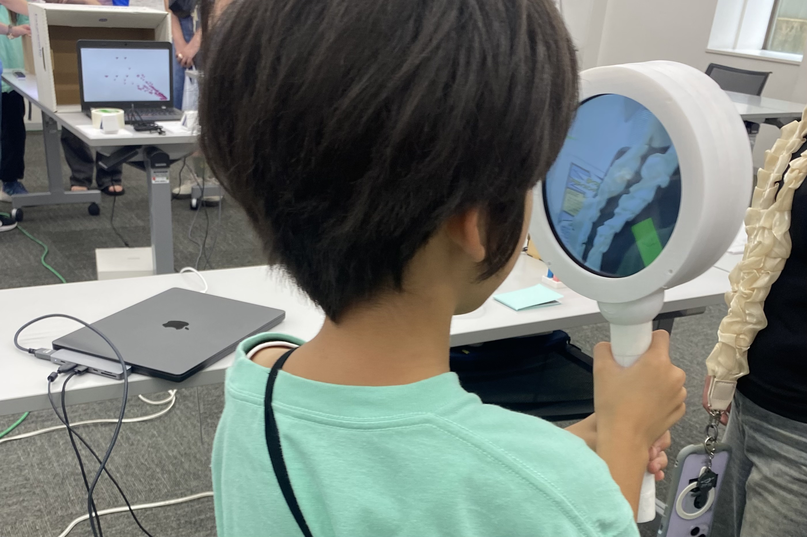
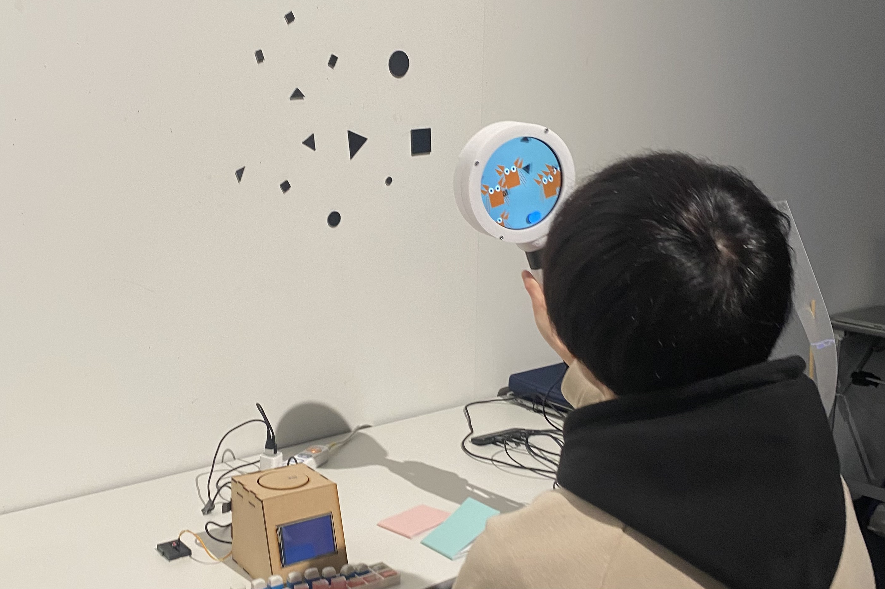

ざ・わーるど・おぶ・むしめがね



- 使用技術
- openFrameworks,openCV
- 制作年月
- 2024年10-12月
- 作品概要
- 虫眼鏡デバイスで丸・三角・四角の形状をみるとそこからキャラクターが生成される作品である．
虫眼鏡は一般的に，小さな生き物を観るために使用される．この作品では，この虫眼鏡は多くの生き物を観てきたので，虫眼鏡が見ている世界では全てのものが生きているのではないかという世界観のもと制作が行われた．虫眼鏡デバイスはその虫眼鏡の視点を体験することができるデバイスである． 体験を通して，世界にはあらゆるところに命が宿っているかもしれないという新たな視点を提供する体験を設計している． - 実装方法
- 虫眼鏡デバイスは，webカメラ，円形ディスプレイ，PCから構成される．webカメラから得た画像を，openFramewroksでopenCVを用いてエッジを取得し，頂点数から形状認識を行なっている． その形状の場所から，その形状のキャラクターが生成されるアニメーションを再生する．
- 受賞
この作品はナラティブインタラクションという自身が提唱するインタラクションの概念の検証のため，卒業研究で制作された．
ナラティブインタラクションは，人と物のインタラクションを通じて，物に物語を与えるものである．
ナラティブインタラクションは，2つのインタラクション手法を包括する概念である．
1つ目：物語を伝えるためのインタラクション
2つ目：インタラクションそのものに物語性を与える
この作品は2つ目のインタラクション手法に基づいて制作された．
この作品は，オープンキャンパスや，多摩センターで展示を行なった．